20년 전 레거시: 한 건씩 만들고 비교하고 넣었어요
발표자는 2006년 국내 게임 회사에서 빌링 개발을 맡았어요. 리니지나 뮤 같은 RPG(Role-Playing Game)의 정액제·정량제 과금, 막 시작된 부분 유료 아이템 판매, PC방 과금이 빌링의 일이었고, 쿠폰 시스템도 그중 하나였어요. 쿠폰은 적게는 수백 개, 많게는 수백만 개를 한 번에 발급했어요.
당시 쓰던 레거시 시스템은 구조가 단순했어요. 아래 화이트보드 왼쪽의 사람이 마케터, 그 옆 상자가 관리자 툴, 가운데가 웹 서버, 오른쪽 원통이 쿠폰 DB예요. 웹 서버 안의 빨간 줄과 DB 사이를 오가는 빨간 화살표가 이 시스템의 문제를 보여 줘요.
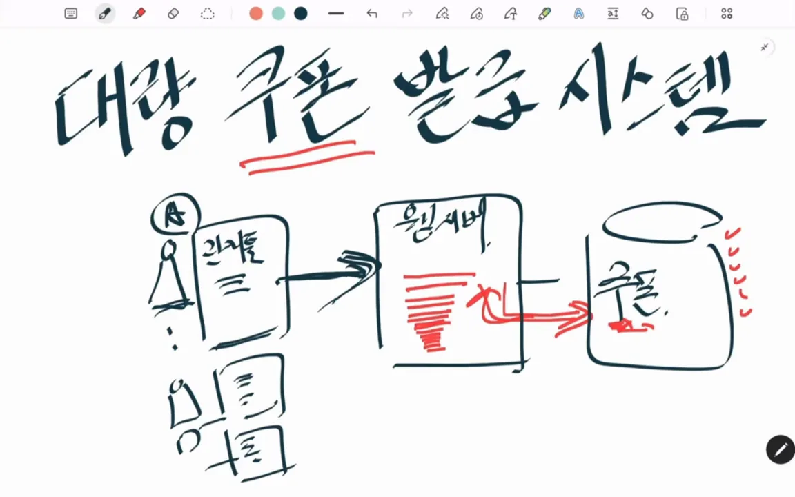
"쿠폰 10만 개"를 요청하면 웹 서버가 번호를 하나 만들어 DB에 넣어 봐요. 기존 번호와 겹치면 실패가 돌아오고, 다시 만들어 다시 넣어요. 통과하면 INSERT하고, 이걸 10만 번 되풀이했어요.
처음에 수백, 수천 개를 만들 때는 괜찮았어요. 쿠폰이 쌓이고 한 번에 발급하는 양이 늘자 점점 느려져서, 오전에 요청하고 오후에 확인하는 일까지 생겼어요. 마케터마다 자기 캠페인이 따로 있는데도 A가 작업 중이면 B와 C는 기다려야 했죠. 발표자가 받은 미션은 발급 성능을 올리고 운영을 효율적으로 바꾸는 것이었어요.
세 가지 개선: 네임스페이스, 로컬 메모리, 벌크 인서트
발표자는 세 가지를 바꿨어요. 크게 보면 "비교할 대상을 줄인다"와 "일을 서버 밖으로 뺀다" 두 가지로 묶을 수도 있다고 해요.
① 캠페인 번호를 네임스페이스로
쿠폰을 발급하려면 캠페인부터 등록해야 했어요. 쿠폰 번호는 다섯 자리씩 다섯 블록, 모두 25자리였어요. 발표자는 각 블록의 앞자리 한 글자씩, 합해서 다섯 글자를 캠페인 번호로 썼어요. 아래 화이트보드 왼쪽 위의 "5자리 = 캠페인 번호 = 네임스페이스"가 그 설명이에요.
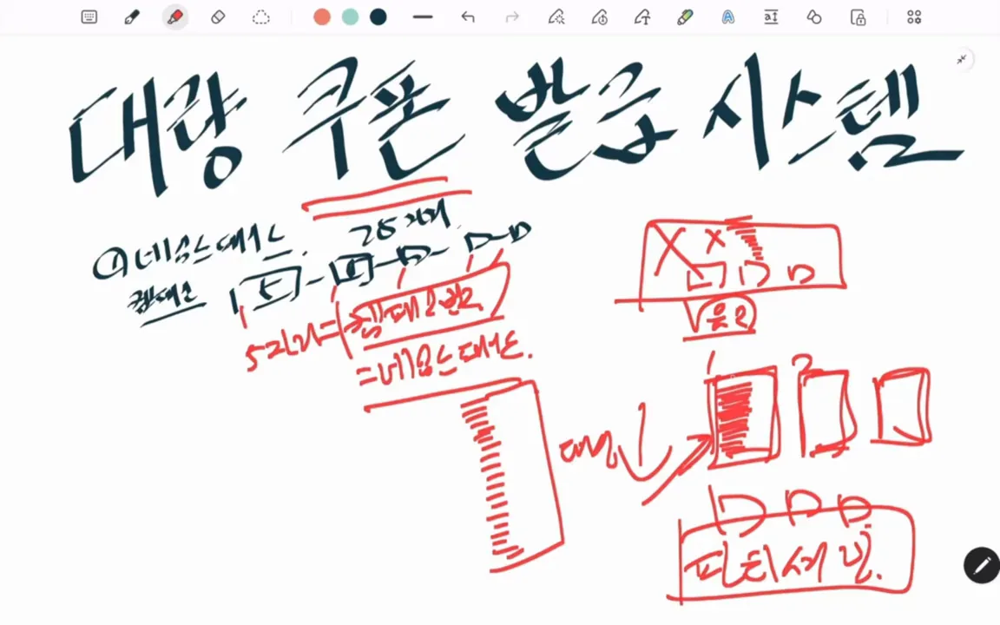
캠페인은 1년에 많아야 수백 개예요. 그 정도 중복 검사는 순식간이죠. 캠페인 번호가 유일하다는 것만 확인하면, 그 캠페인 아래 수십만 개의 쿠폰은 다른 캠페인 쿠폰과 비교할 필요가 없어요. 번호의 앞부분이 이미 다르니까요.
테이블도 캠페인마다 나눴어요. 1번 캠페인은 1번 테이블, 2번 캠페인은 2번 테이블이에요. 캠페인 기준으로 파티셔닝을 한 것과 같은 효과예요. 나중에 유저가 쿠폰을 등록할 때도 한 테이블만 보면 되니 인덱스 효율이 좋아져요.
② 생성과 중복 검사를 마케터 PC 메모리로
예전에는 번호 생성, 중복 확인, INSERT를 모두 웹 서버가 DB와 한 건씩 주고받으며 했어요. 발표자는 이 일을 마케터 PC의 메모리로 옮겼어요. 아래 그림에서 빨간 원으로 묶은 웹 서버와 DB 사이 왕복이 사라지는 부분이고, 왼쪽 마케터 PC가 빨갛게 칠해진 게 일이 옮겨 간 자리예요.
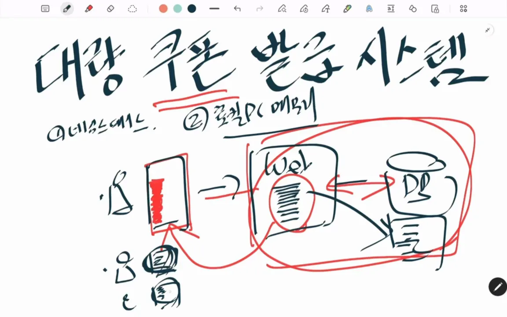
마케터마다 자기 PC에서 자기 캠페인 번호만 만들면 되니 여러 명이 동시에 일할 수 있어요. 속도도 빨라지고, 백엔드 서버 부하도 크게 줄었어요.
③ 벌크 인서트
PC 메모리에서 다 만든 번호는 웹을 거쳐 DB에 한꺼번에 넣었어요. 수십만 개를 한 번에 넣기는 부담스러우니 수천 개씩 나눠서 넣었어요. 아래 그림 왼쪽 PC 위의 작은 네모들이 나눠 보내는 묶음이고, 가운데 웹 서버의 빨간 원 안 "중복 X"는 서버에서 더는 쿠폰별 중복 검사를 하지 않는다는 표시예요.
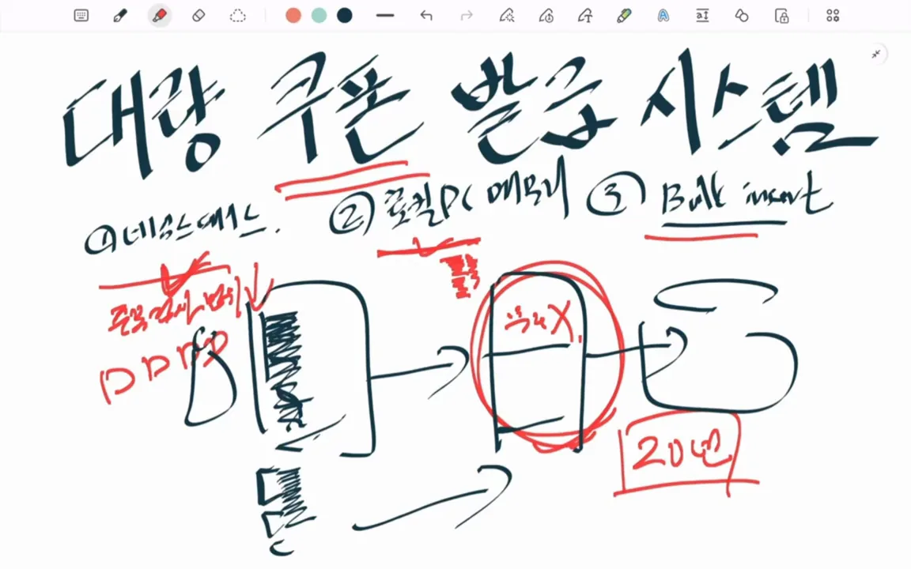
바뀌기 전과 후를 나란히 놓으면 차이가 분명해져요. 중복 검사 대상이 "DB의 쿠폰 전체"에서 "캠페인 번호 몇백 개"와 "내 PC 메모리 안의 번호"로 줄었어요.
요구사항부터: 기능과 비기능
두 번째 편은 설계에 앞서 요구사항을 정리해요. 발표자는 요즘 바이브 코딩 시대에 "어떻게(How)"보다 "무엇을(What)"이 중요하다고 하지만, 경험 많은 개발자는 예전부터 What도 잘했다고 말해요. 요구사항을 빠짐없이 뽑아야 개발 도중 갈아엎는 일을 막을 수 있어요.
실무에서는 요구사항을 둘로 나눠요. 아래 화이트보드처럼 요구사항에서 기능 요구사항과 비기능 요구사항으로 가지가 갈라져요.
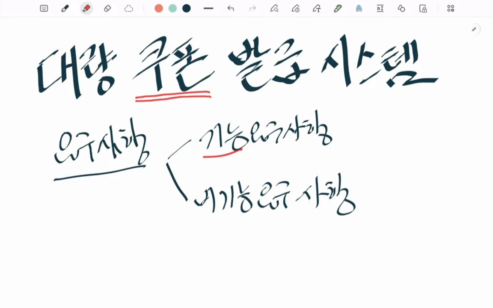
기능 요구사항은 "쿠폰 번호는 25자리 숫자·문자 조합", "쿠폰을 등록하면 이런 아이템을 준다"처럼 시스템이 하는 일 자체예요. 비기능 요구사항은 성능, 보안, 확장성, 사용성, 유지보수성 같은 품질이에요. "쿠폰이 빠르게 만들어져야 한다"가 그 예인데, 실무에서는 더 구체적인 숫자로 적어요.
기능 요구사항 일곱 가지
첫 항목은 번호 체계예요. 화이트보드에 "5자리씩 하이픈 구분, 총 25자리", "숫자/문자 혼용(영문 대문자)", "특수문자, 혼동 문자 제외"가 적혀 있어요. 대문자만 쓰는 건 사용자가 대소문자를 바꿔 넣는 번거로움을 없애기 위해서예요.
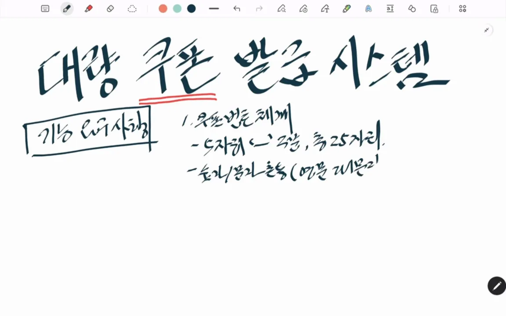
다음 화면에는 2번 대량 발급·운영과 3번 유일성 보장이 나란히 있어요. 파일 다운로드가 들어간 이유는 마케터가 제휴 업체에 쿠폰 전체를 파일로 넘기는 일이 많아서예요.
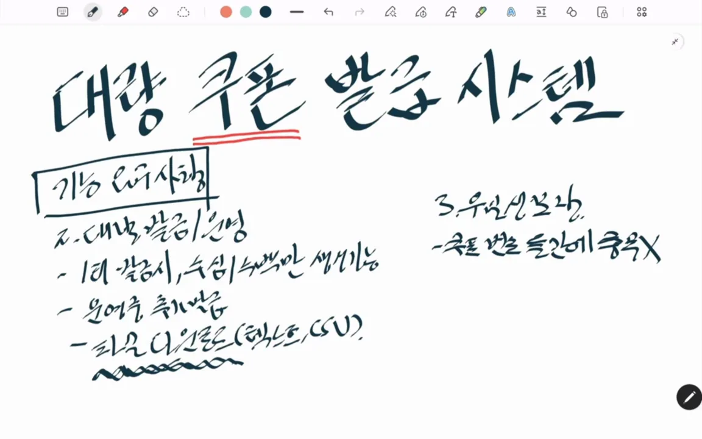
4번 식별성은 주민등록번호에 성별과 출생 연도가 들어 있듯, 번호 일부만 봐도 캠페인을 알 수 있게 하자는 거예요. 발표자는 예전에 여러 게임을 구분하는 게임 코드와, 오프라인 쿠폰용 지역 코드를 번호에 넣었다고 해요. 나머지 5~7번은 아래 화면에 있어요.
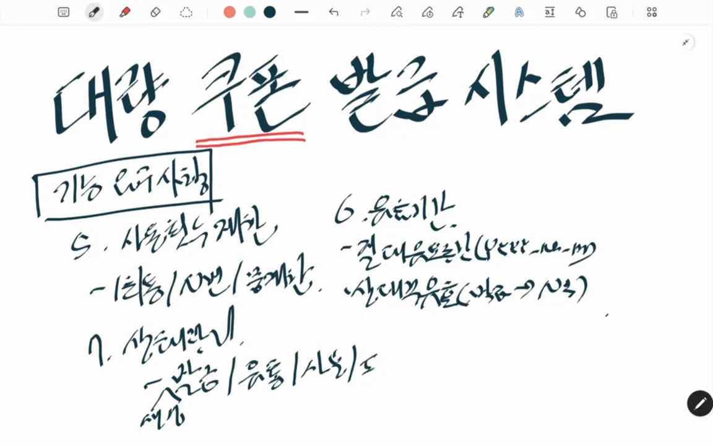
| 번호 | 기능 요구사항 | 내용 |
|---|---|---|
| 1 | 번호 체계 | 5자리씩 하이픈 구분, 총 25자리. 숫자·영문 대문자 혼용, 특수문자와 혼동 문자(0과 O, 1과 I 등) 제외 |
| 2 | 대량 발급과 운영 | 1회 수십만~수백만 개, 운영 중 추가 발급, 텍스트·CSV(Comma-Separated Values) 다운로드 |
| 3 | 유일성 보장 | 쿠폰 번호끼리 겹치지 않음 |
| 4 | 식별성 제공 | 번호 일부로 캠페인을 알아볼 수 있음 |
| 5 | 사용 횟수 제한 | 1회용, n회, 무제한 |
| 6 | 유효 기간 | 절대(몇 월 며칠까지), 상대(발급 후 며칠까지) |
| 7 | 상태 관리 | 생성 → 발급 → 유통 → 사용 → 폐기·만료 |
비기능 요구사항 세 가지
비기능 쪽은 발급 성능, 사용 성능, 보안 세 가지예요. 아래 화면에서 오른쪽 빨간 괄호가 세 항목을 묶고 있어요. 보안 항목이 가장 길어요.
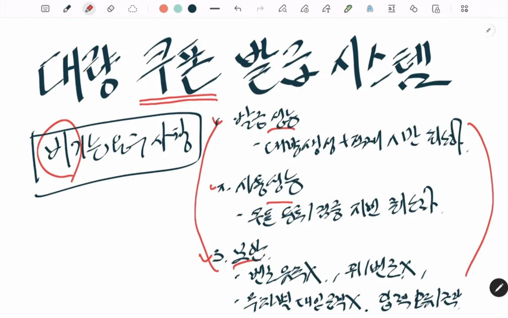
- 발급 성능: 대량 생성과 DB 적재 시간을 최소화해요.
- 사용 성능: 유저가 쿠폰을 등록하고 검증받는 지연을 최소화해요.
- 보안: 쿠폰 하나를 받아 보고 다른 번호를 유추할 수 없어야 해요. 위조·변조도, 무차별 대입 공격도 막아야 해요. 입력 오류와 조작은 빨리 걸러 내면 좋아요.
발표자는 비기능 요구사항을 개발자와 아키텍트가 먼저 꺼내야 한다고 강조해요. 고객은 시스템 전문가가 아니라서 "무차별 대입 공격을 막아야 한다" 같은 건 마케터가 떠올리기 어렵기 때문이에요. 물론 혼자 정하지 않고 고객과 협의하면서 정해요.
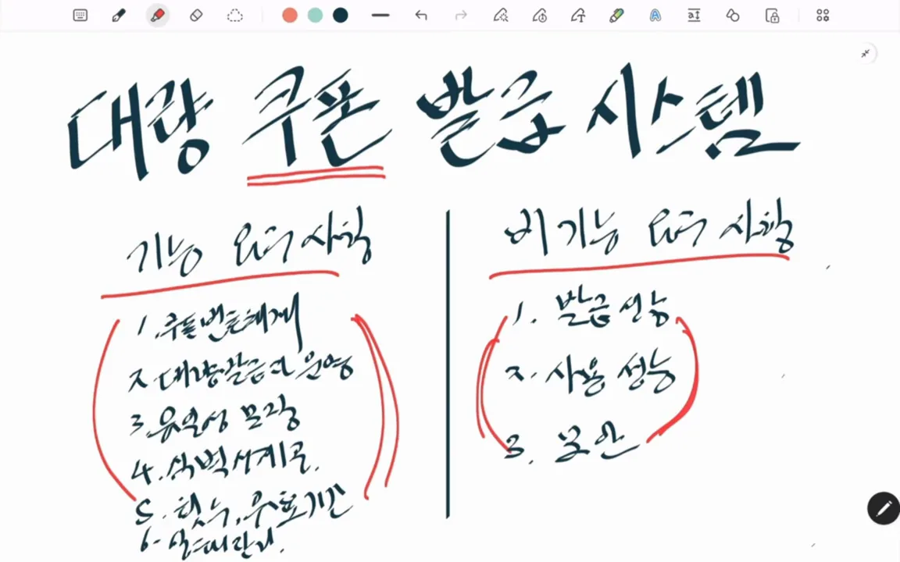
번호 체계, 문자셋, 난수
세 번째 편부터는 슬라이드로 설계 전략을 하나씩 짚어요. 슬라이드 표지에 적힌 목표는 "고속 쿠폰 발급"과 "안전한 쿠폰 사용" 두 가지예요. 먼저 번호를 어떻게 만들지부터 봐요.
번호 체계와 저장 방식
슬라이드 위쪽의 예시 번호 7KQ9X-3M8PH-2TZ1N-6XH5C-A8QTR가 다섯 자리씩 다섯 블록인 25자리예요. 아래 상자에 저장 전략이 있어요. 하이픈은 사용자 입력 편의를 위한 구분자일 뿐, DB에는 하이픈을 뺀 25자리 문자열만 넣어요. 인덱스 크기와 저장 용량을 아끼려는 거예요.
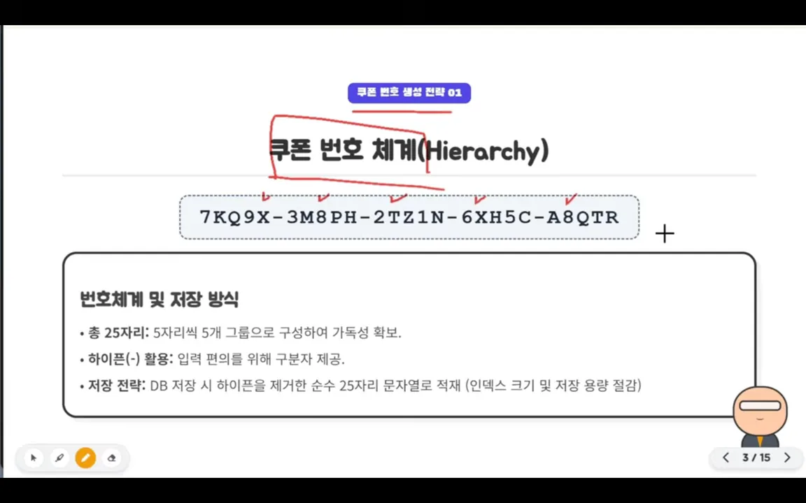
발표자는 여기서 게임 회사 시절에 "앞 다섯 자리"를 캠페인 네임스페이스로, 그 뒤 몇 자리를 게임 코드와 총판 지역 코드로 써서 의미를 담았다고 말해요. 나머지 자리는 랜덤이었어요. 첫 편에서는 "각 블록의 앞자리 한 글자씩"이라고 했는데, 마지막 편의 파이썬 코드도 이 방식(블록마다 첫 글자가 캠페인 코드)으로 만들어요.
문자셋: Crockford Base32
문자셋은 Crockford Base32를 써요. 슬라이드의 검은 띠에 32개 글자 0123456789ABCDEFGHJKMNPQRSTVWXYZ가 있어요. 특수문자가 없고 숫자와 영문 대문자뿐이며, O와 0, I와 1, l과 1처럼 헷갈리는 글자를 뺐어요. 쿠폰, 라이선스 키, 인증 코드처럼 사람이 눈으로 읽고 옮겨 적는 코드에 잘 맞아요.
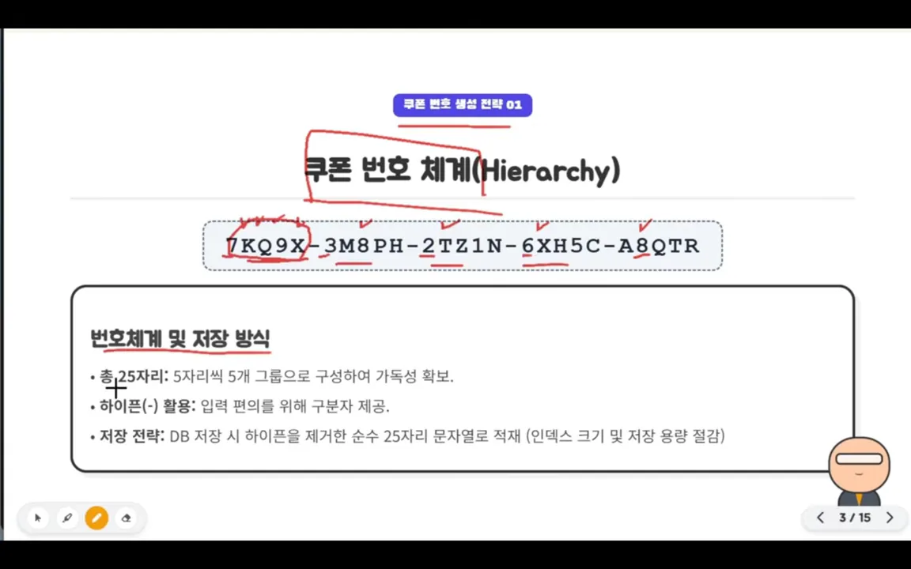
랜덤 추출: CSPRNG, 그리고 패턴 금지
번호는 그냥 랜덤이기만 하면 끝나는 게 아니에요. 예측하기 어려워야 해요. 아래 슬라이드 왼쪽 칸이 CSPRNG로 뽑으라는 내용, 오른쪽 칸이 패턴을 넣지 말라는 내용이에요. 맨 아래 주의 줄은 "난수 생성 시 시드 값이 유출되면 전체 쿠폰 번호가 뚫릴 수 있다"예요.
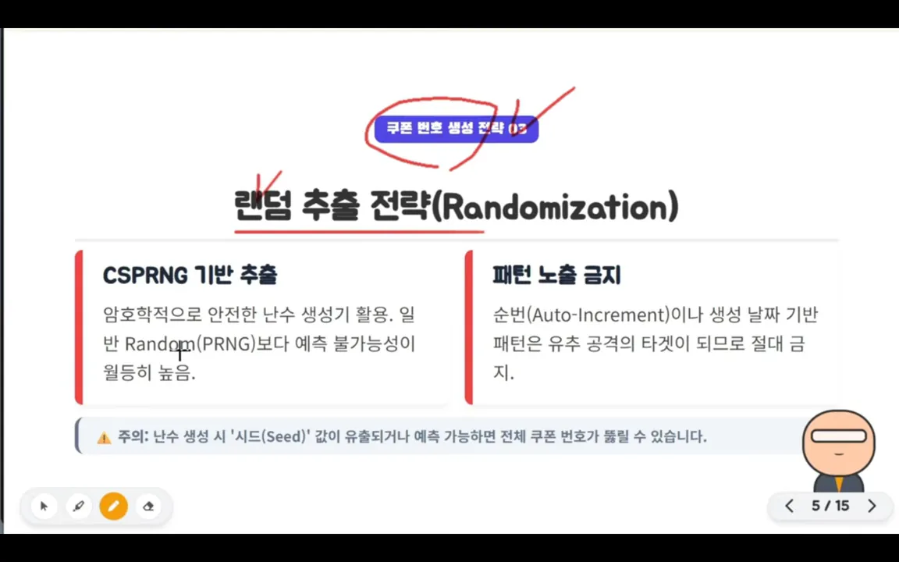
일반 PRNG(Pseudo-Random Number Generator)는 내부적으로 시드 값이 결과를 정해요. 시드가 새거나 추정되면 이후 번호를 예측할 수 있어요. CSPRNG는 운영체제의 안전한 난수 풀을 써서, 출력만 보고 내부 상태를 거꾸로 알아내기가 매우 어려워요. 쿠폰처럼 돈과 관련된 값을 만들 때는 반드시 CSPRNG를 쓰라고 해요.
네임스페이스, 파티셔닝, 유실 대비
첫 편의 개선안 두 가지가 설계 전략으로 다시 나와요. 이번엔 무엇이 좋아지는지를 슬라이드로 정리해요. 그리고 댓글로 받은 질문, "로컬 PC에서 만들다 유실되면 어떡하나"에 대한 답이 더해져요.
캠페인 네임스페이스로 유일성 검증 범위 줄이기
슬라이드의 "효과" 줄이 요점이에요. 수십억 건 전역 DB 중복 체크가 아니라, 캠페인 네임스페이스 범위 안에서만 검증해요. 탐색 범위가 줄어드니 발급 속도가 크게 올라가요.
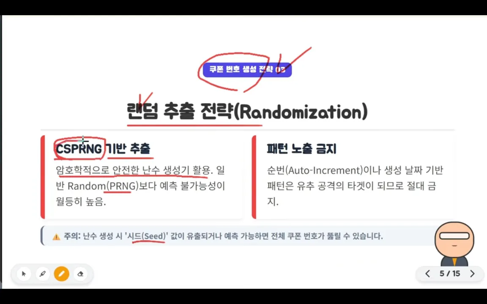
네임스페이스 기반 파티셔닝
캠페인마다 독립된 테이블이나 파티션을 둬요. 슬라이드 왼쪽 "테이블 분리" 칸이 조회 성능 이야기, 오른쪽 "운영 최적화" 칸이 운영 이야기예요.
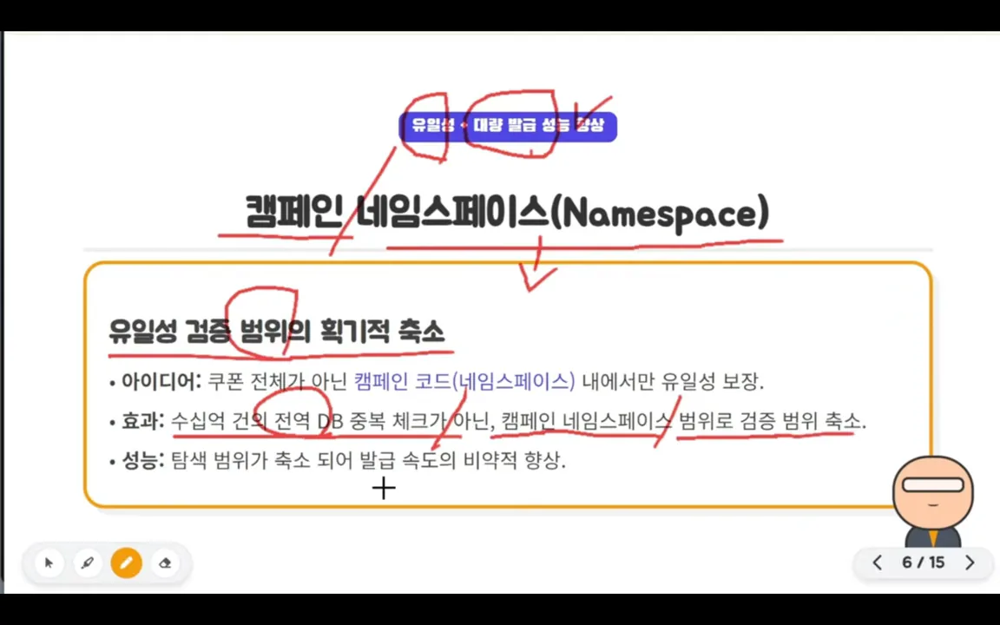
- 인덱스 크기가 줄어 입출력 성능이 좋아져요.
- 유저가 쿠폰을 넣으면 캠페인 코드를 보고 바로 해당 테이블로 보낼 수 있어요.
- 캠페인이 끝나면 그 테이블이나 파티션만 보관하거나 지우면 돼요.
- 테이블이 나뉘어 있으니 한 캠페인의 락이 다른 캠페인을 막지 않아요.
로컬 PC 발급 중 유실 대비
로컬 PC에서 만들면 이론적으로 유실될 수 있어요. 전원이 꺼지거나, 발급 수가 메모리보다 커서 프로세스가 죽거나, 벌크로 넣는 도중 네트워크가 끊기는 경우예요. 발표자는 DB가 WAL(Write-Ahead Logging)을 쓰듯 안전장치를 둘 수 있다고 해요. 슬라이드의 1~3번이 그 단계예요.
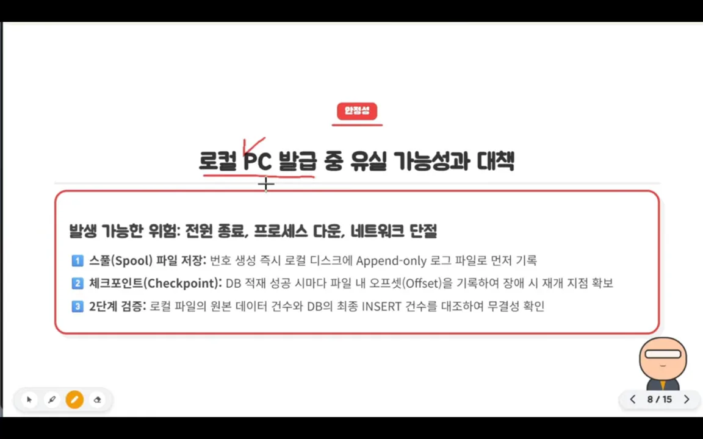
흐름으로 그리면 이래요. 번호를 만들면 먼저 스풀 파일 끝에 덧붙이고, 일정 단위가 쌓이면 DB에 적재해요. 적재가 성공할 때마다 파일 안의 위치(오프셋)를 기록해 두면, 장애가 나도 그 지점부터 다시 시작할 수 있어요.
flowchart LR
A["번호 생성"] --> B["스풀 파일에 append"]
B --> C{"일정 단위가 쌓였나?"}
C -- "아니요" --> A
C -- "예" --> D["DB에 배치 적재"]
D --> E["성공 오프셋 기록"]
E --> A
E -. "모두 끝나면" .-> F["파일 건수와 DB 건수 대조"]
다만 쿠폰 발급은 유저가 아니라 관리자가 하는 일이라, 실패해도 미션 크리티컬하지는 않아요. 수십만 건을 만들다 중간에 죽으면 다시 만들기 불편할 뿐이죠. 그래서 이 안전장치를 둘지는 시스템 특성과 개발 기간을 보고 정하라고 해요.
체크 2자리로 DB 앞에서 거르기
체크 2자리는 사용 성능과 보안을 함께 노린 장치예요. 유저가 쿠폰을 넣을 때 DB에 묻기 전에 형식이 맞는지 먼저 계산해 보고, 틀리면 바로 돌려보내요. 슬라이드 제목의 "DB를 보호하는 1차 방어선"이 그 뜻이에요.
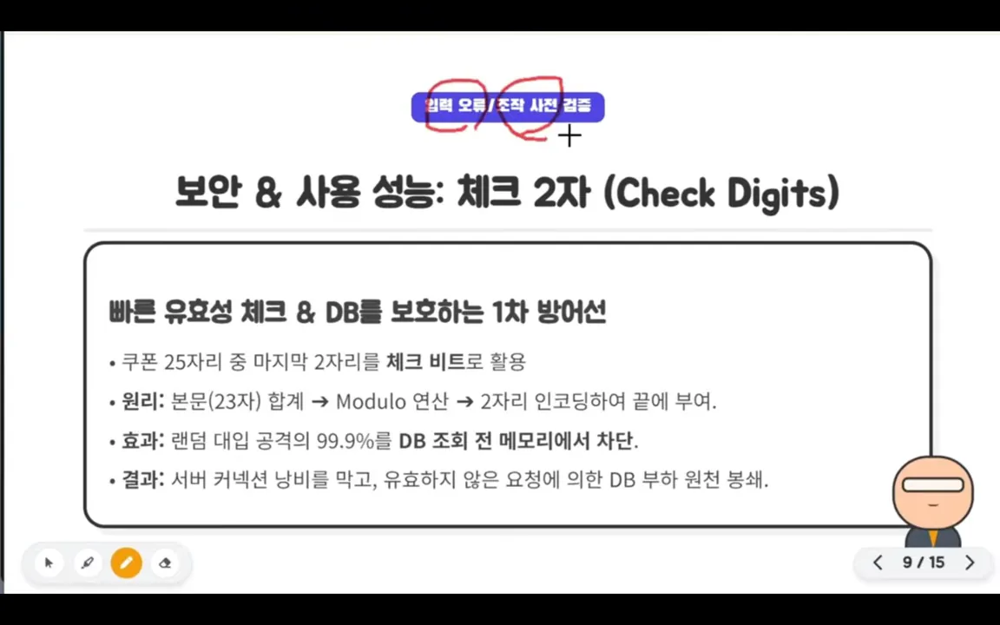
25자리 중 앞 23자리가 본문이고, 마지막 2자리가 체크 문자예요. 마지막 편의 코드는 본문을 다시 셋으로 나눠요. 다섯 블록의 첫 글자는 캠페인 코드, 나머지 18자리는 랜덤이에요. 아래 그림은 데모에서 실제로 나온 번호의 앞 23자리를 칸에 넣은 거예요.
계산은 이렇게 해요. 앞 23자리의 각 글자를 Crockford Base32 순서 번호(0~31)로 바꿔 모두 더해요. 그 합을 1024로 나눈 나머지를 32진수 두 글자로 바꿔 끝에 붙여요. 검증할 때는 입력된 25자리에서 마지막 두 글자를 떼고, 앞 23자리로 같은 계산을 해서 떼어 낸 두 글자와 같은지 봐요. 다르면 DB까지 가지 않고 거절해요.
두 글자가 가질 수 있는 조합은 32×32=1024가지예요. 아무렇게나 만든 번호가 우연히 맞을 확률이 약 1/1024라서, 랜덤 입력의 약 99.9%가 앞단에서 걸러져요. DB 커넥션 낭비도 줄고, 오타나 조작된 번호를 빨리 막을 수 있어요.
이 체크 투자는 강력한 보안 장치라기보다는 기본적인 오타와 조작에 대한 빠른 검출과 DB로 가기 전에 1차 필터링 용도로 사용해야 된다는 점 기억하시기 바랍니다.
— 영상 29:45
보안 전략 네 가지
보안 전략은 네 가지예요. 슬라이드도 "보안 전략 01~04"로 번호가 붙어 있어요.
01. 번호 유추 원천 차단
번호 체계에서 말한 CSPRNG를 보안 관점에서 한 번 더 짚어요. 슬라이드 왼쪽 빨간 칸이 일반 PRNG, 오른쪽 초록 칸이 CSPRNG예요.
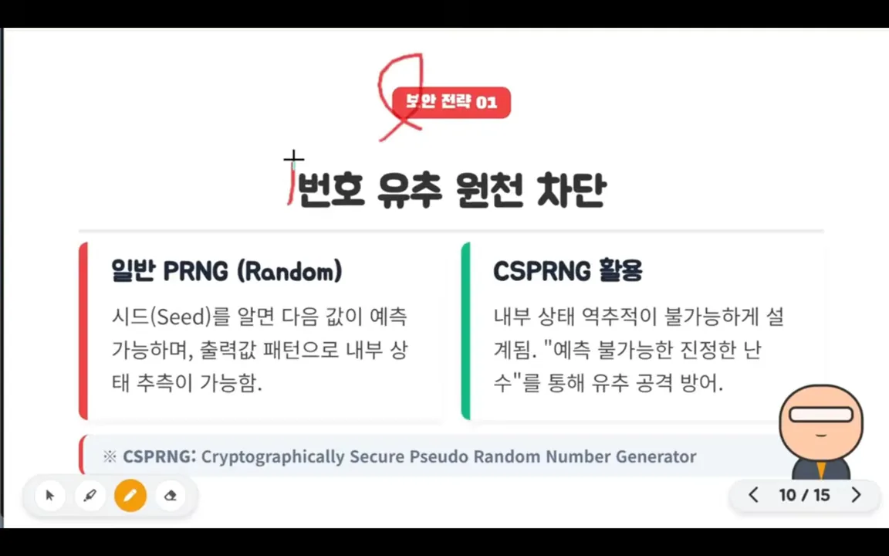
02. 응답 정보 최소화
오류가 났을 때 너무 친절하게 알려 주면 안 돼요. 슬라이드의 나쁜 예와 좋은 예를 나란히 보면 차이가 보여요.
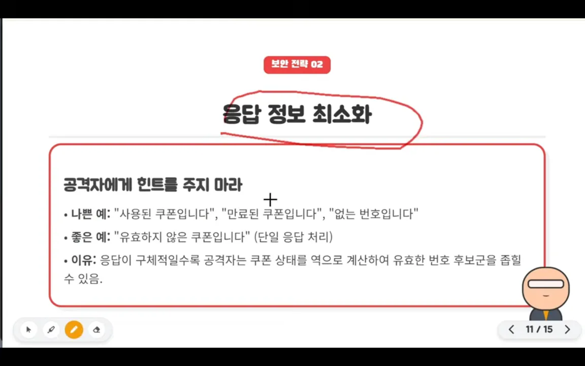
"이미 사용된 쿠폰", "자릿수가 다릅니다" 같은 응답을 받으면 공격자는 무엇만 고치면 되는지 알게 돼요. 그래서 "유효하지 않은 쿠폰입니다" 하나로 뭉뚱그려 답해요. 로그인 실패 메시지가 예전엔 "아이디가 틀렸습니다"였다가 요즘 "일치하지 않는 정보입니다"로 바뀐 것과 같은 이유예요.
03. 위·변조 방지: HMAC 서명
서버만 아는 비밀 키로 쿠폰 번호의 해시 서명을 만들어 쿠폰에 넣는 방법이에요. 슬라이드에는 "등록 시 해시값을 재계산하여 단 1비트의 조작도 즉시 탐지"라고 적혀 있어요.
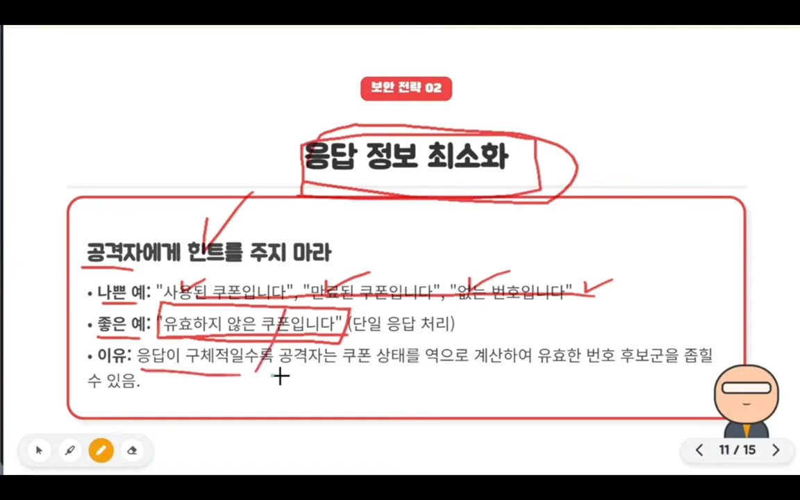
발표자 자신은 쿠폰에 서명까지 넣어 본 적이 없다고 해요. 극강의 무결성이 필요하면 써도 되지만, 굳이 필요할지는 의문이라고 덧붙여요.
04. 무차별 대입 공격 방어
공격자가 번호를 기계로 마구 만들어 넣어 보다가 운 좋게 맞히는 공격을 막아요. 슬라이드 왼쪽이 레이트 리밋과 캡차, 오른쪽이 지수 백오프예요.
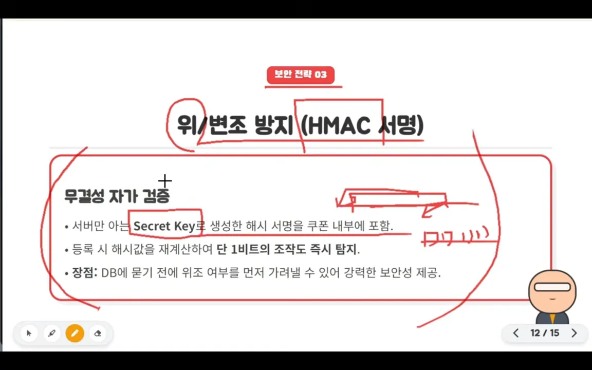
IP(Internet Protocol)나 계정마다 임계치를 둬요. 예를 들어 5초에 열 번쯤 들어오면 사람이 아니라 기계라고 보는 식이에요. 넘으면 캡차를 띄워 봇을 막아요. 실패가 쌓일수록 응답 시간을 점점 늘리는 지수 백오프도 더할 수 있어요.
전체 요약
마지막 슬라이드가 성능, 안전, 보안 세 줄로 전략을 묶어요.
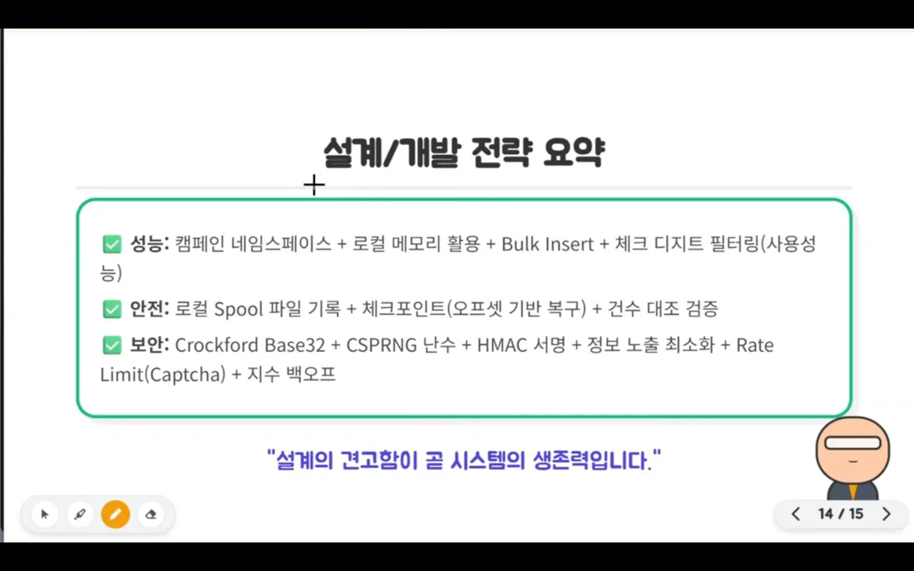
| 관점 | 전략 |
|---|---|
| 성능 | 캠페인 네임스페이스, 로컬 메모리에서 생성·중복 검사, 벌크 인서트, 체크 2자리로 사용 시 빠른 검증 |
| 안전 | 로컬 스풀 파일 기록, 오프셋 기반 복구, 파일과 DB 건수 대조 |
| 보안 | Crockford Base32, CSPRNG, HMAC 서명, 응답 정보 최소화, 레이트 리밋과 캡차, 지수 백오프 |
발표자는 이 전략을 모두 써야 한다는 뜻이 아니라고 분명히 해요. 트레이드오프를 따져서 필요한 것만 골라 적용하면 돼요.
파이썬으로 구현한 쿠폰 생성기
네 번째 편은 멤버십용으로, 앞의 전략을 파이썬 코드로 옮겨요. 전체 상황을 다 흉내 내지는 않고 핵심 몇 가지만 구현했어요. 백엔드는 빼고, 클라이언트가 청크 단위로 백엔드에 보낸다고 가정해요.
무엇을 구현했나
파일 맨 위 주석에 구현 목록이 있어요. 첫 줄 import secrets에 빨간 밑줄이 그어진 이유는 이게 CSPRNG를 주는 파이썬 내장 모듈이기 때문이에요. requests는 실제 백엔드에 붙일 때 쓰라고 주석 처리해 뒀어요.
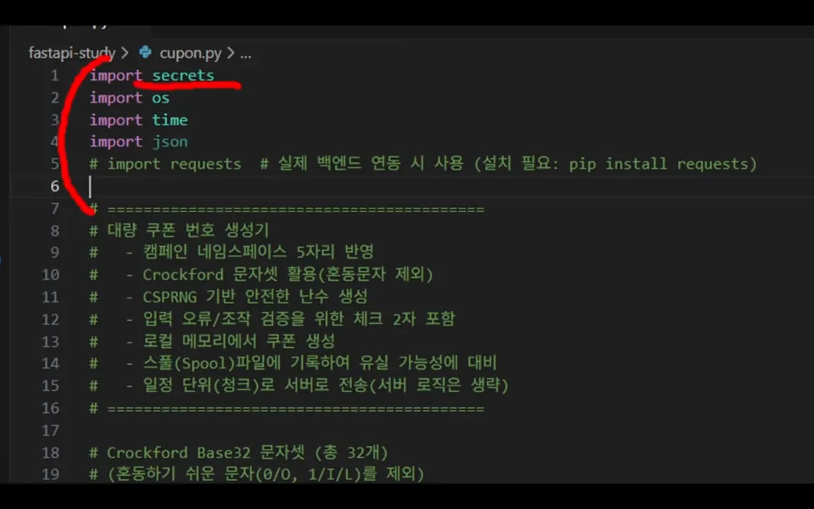
문자셋과 체크 2자리 함수
20번 줄에 Crockford Base32 32글자를 문자열로 정의하고, 24번 줄에서 각 글자를 0~31 숫자로 바꾸는 딕셔너리 BASE32_MAP을 만들어요. 이 딕셔너리는 체크 문자를 계산할 때 써요. 아래쪽 calculate_check_digit이 체크 2자리 함수예요.
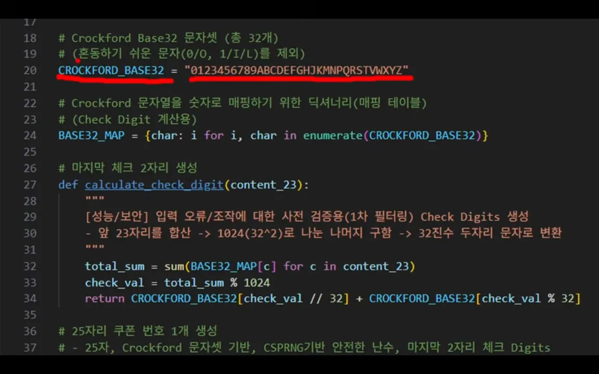
check_val // 32가 첫 체크 글자, check_val % 32가 둘째 체크 글자예요. 영상 38:00에서 보기def calculate_check_digit(content_23):
total_sum = sum(BASE32_MAP[c] for c in content_23)
check_val = total_sum % 1024
return CROCKFORD_BASE32[check_val // 32] + CROCKFORD_BASE32[check_val % 32]쿠폰 하나 만들기
generate_single_coupon(campaign_code)은 25자리 번호 하나를 만들어요. 캠페인 코드는 DB에서 이미 유일성을 확인받은 다섯 자리라고 가정해요. 다섯 자리가 아니면 ValueError를 내요. 그다음 secrets.choice()로 랜덤 글자 18개를 뽑아요. 25자리에서 캠페인 코드 5자리와 체크 2자리를 빼면 18자리가 남으니까요.
아래 화면의 for i in range(5) 루프가 다섯 블록을 만들어요. 블록마다 캠페인 코드 한 글자(campaign_code[i])를 먼저 넣고, 앞의 네 블록은 랜덤 4자리, 마지막 블록은 랜덤 2자리를 채워요. 마지막 블록의 남은 두 자리는 체크 문자 자리예요.
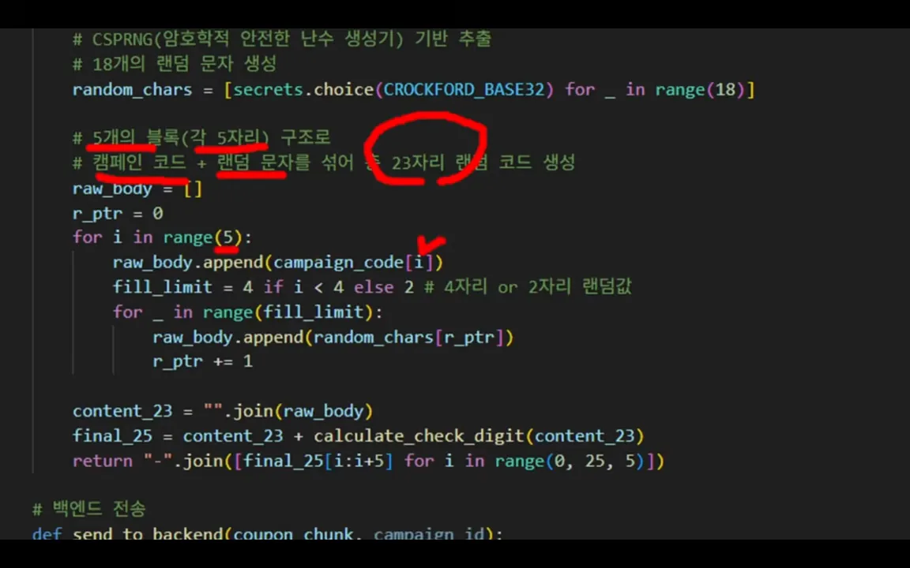
대량 발급을 지휘하는 함수
run_coupon_processing은 캠페인 코드, 발급 개수, 청크 크기, 저장 폴더를 받아요. 아래 화면 위쪽 독스트링의 세 줄, 즉 Python Set으로 중복 제거, 스풀 파일 기록, 청크 처리가 이 함수의 일이에요. 그 아래 unique_coupons = set()이 전체 번호를, chunk_buffer = []가 이번 청크 번호를 담아요.
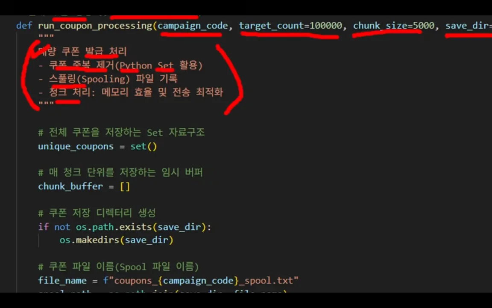
발표자는 파이썬에서 중복 검사에 가장 효율적인 자료형이 set이라서 썼다고 해요. 같은 파일이 있으면 지우고 시작하고, 시작 시각을 기록해 둬요.
본 루프는 아래 화면이에요. 스풀 파일을 append 모드('a')로 열고, 모은 번호가 목표 개수에 닿을 때까지 돌아요. 번호를 하나 만들고, set에 없으면 set과 청크 버퍼에 넣고 파일에 한 줄 써요.
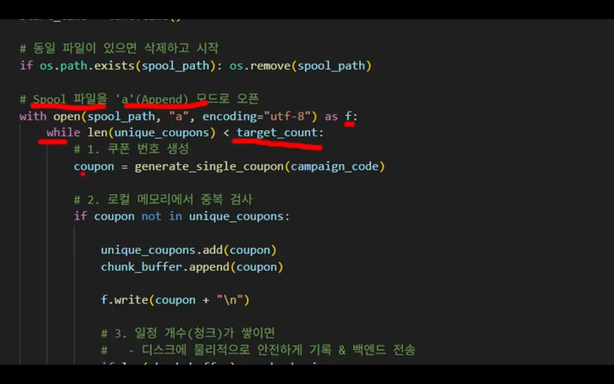
청크마다 디스크에 확정하고 보내요
청크 버퍼가 청크 크기에 닿으면 두 가지를 해요. 먼저 f.flush()와 os.fsync(f.fileno())로 파일을 물리 디스크에 확정하고, 그다음 백엔드로 보내요.
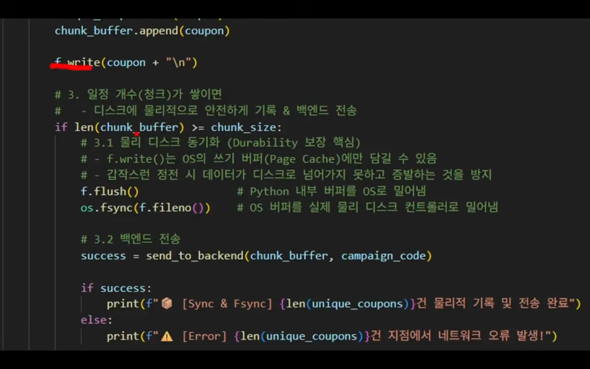
앞에서 이미 스풀 파일에 썼는데 왜 또 할까요? write()만으로는 데이터가 파이썬 내부 버퍼나 OS(Operating System) 쓰기 버퍼에만 머물 수 있어요. 그 사이 정전이나 크래시가 나면 사라져요. flush()가 파이썬 버퍼를 OS로 밀어내고, fsync()가 OS 버퍼를 실제 디스크에 기록하게 해요.
백엔드 전송 함수 send_to_backend는 자리만 잡아 둔 의사 코드예요. 청크를 받아 백엔드 Bulk API(Application Programming Interface)로 보내는 시나리오이고, 백엔드가 그 데이터를 DB에 벌크 인서트한다고 가정해요. 실제 백엔드가 없으니 그냥 True를 돌려줘요.
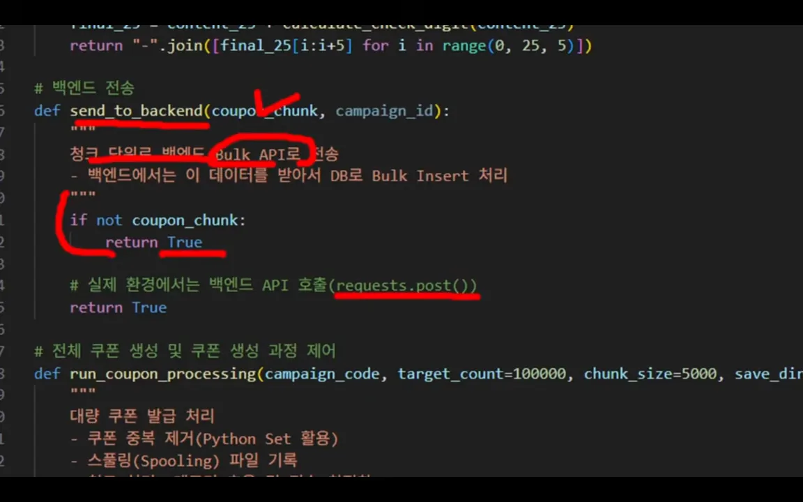
requests.post() 자리에 실제 전송 코드가 들어가요. 영상 46:40에서 보기전송이 끝나면 성공이나 실패 로그를 찍고 청크 버퍼를 비워요. 루프가 끝났는데 청크 크기에 못 미친 번호가 남을 수 있어요. 그래서 마지막에 남은 청크를 한 번 더 보내고 디스크에 확정한 뒤, 총 소요 시간과 결과 파일 경로를 출력해요.
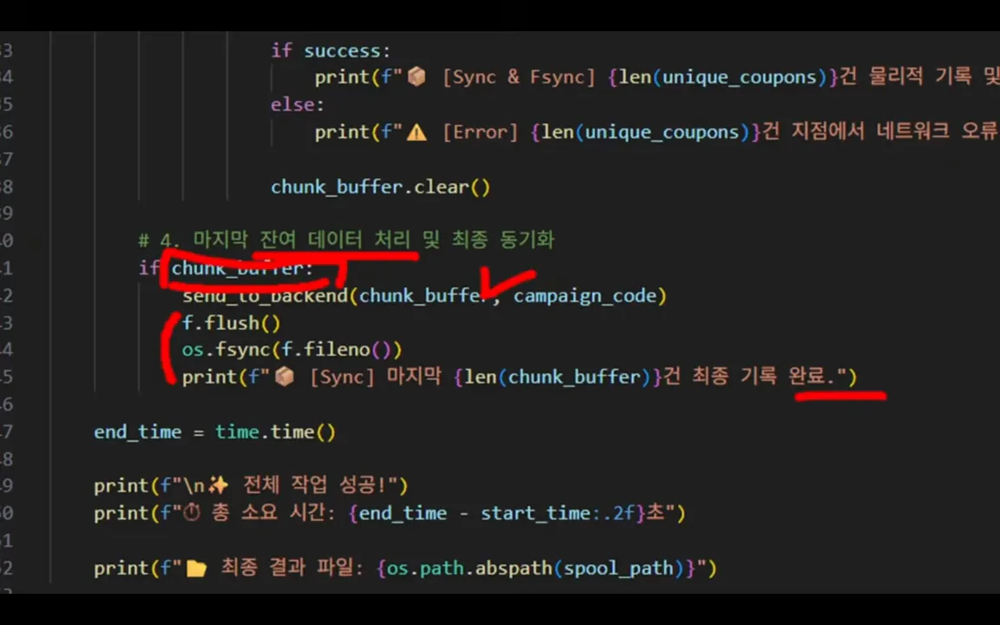
10개, 10만 개, 100만 개를 돌려 봐요
메인 블록에서 함수를 불러요. 캠페인 코드는 앞 단계에서 만들어졌다고 보고 "X7777"로 고정했어요. 화면의 설정은 100만 개, 청크 1만 개예요. 발표자는 이 값을 바꿔 가며 세 번 돌려 봐요.
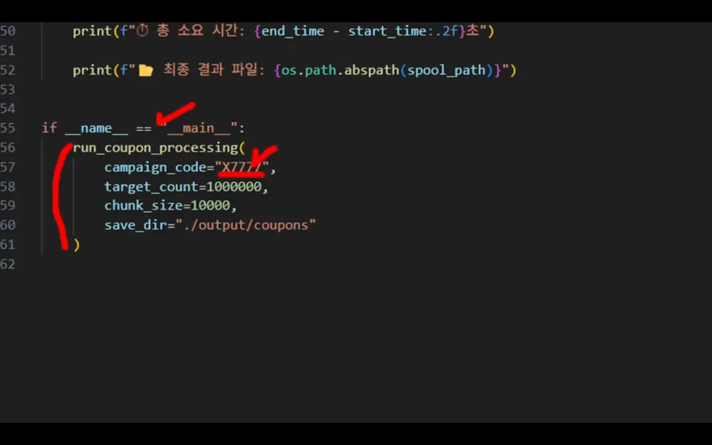
campaign_code, target_count, chunk_size만 바꿔 실험해요. 영상 47:55에서 보기먼저 10개, 청크 10으로 돌리니 바로 끝나고 파일에 10줄이 생겨요. 다음은 10만 개, 청크 1만이에요. 아래 화면 왼쪽 터미널에 "100000건 물리적 기록 및 전송 완료"와 총 소요 시간이 찍혀 있고, 오른쪽 메모장에 결과 파일이 열려 있어요.
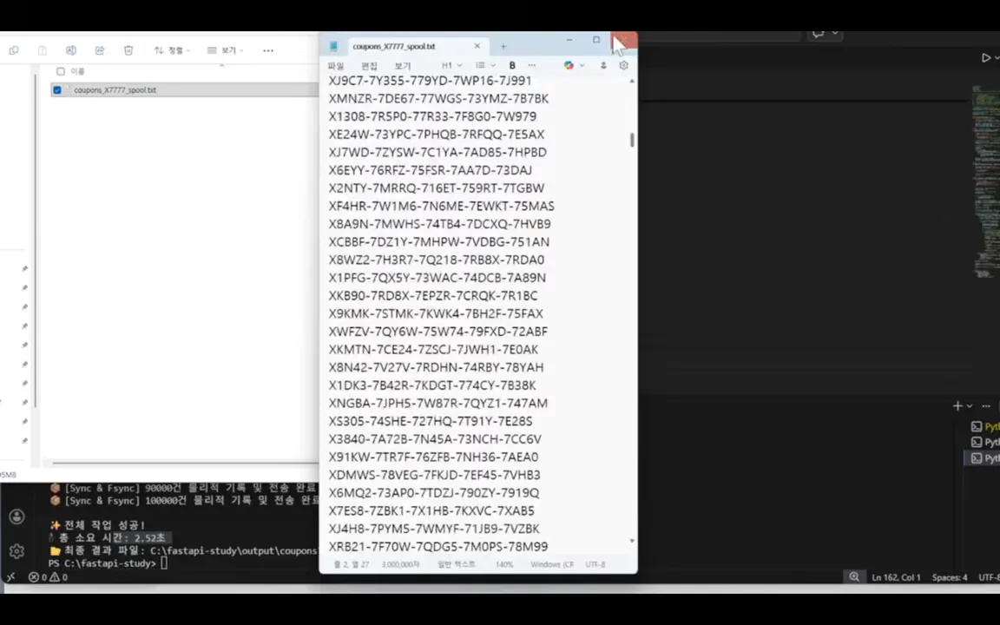
마지막으로 캠페인 코드를 X1234로 바꾸고 100만 개를 만들어요. 청크 단위로 로그가 차례로 찍히고, 결과 파일도 새 이름으로 따로 생겨요.
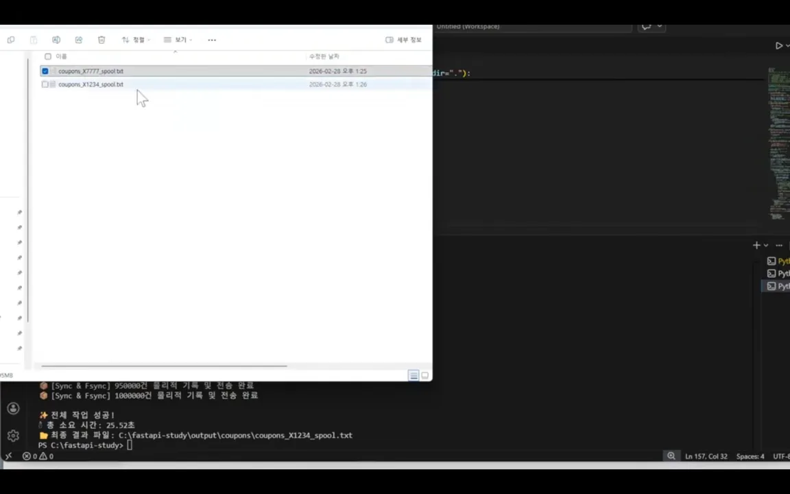
| 캠페인 코드 | 발급 개수 | 청크 | 총 소요 시간(화면) |
|---|---|---|---|
| X7777 | 10 | 10 | 0.00초 |
| X7777 | 100,000 | 10,000 | 2.52초 |
| X1234 | 1,000,000 | 50,000 (로그가 5만 건마다 찍혀요) | 25.52초 |
번호가 늘어난 만큼 시간도 거의 비례해서 늘었어요. 발표자는 코드에 주석을 자세히 달아 두었으니 내려받아 직접 로컬에서 돌려 보라고 권하며 마무리해요.